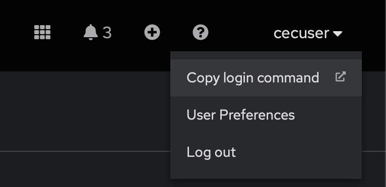
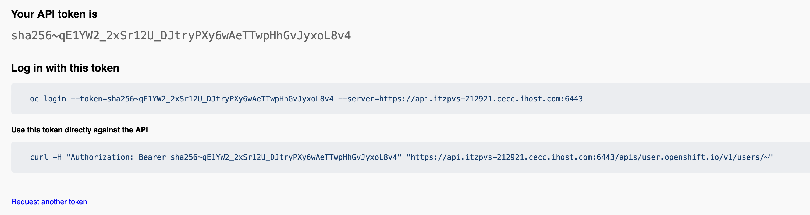
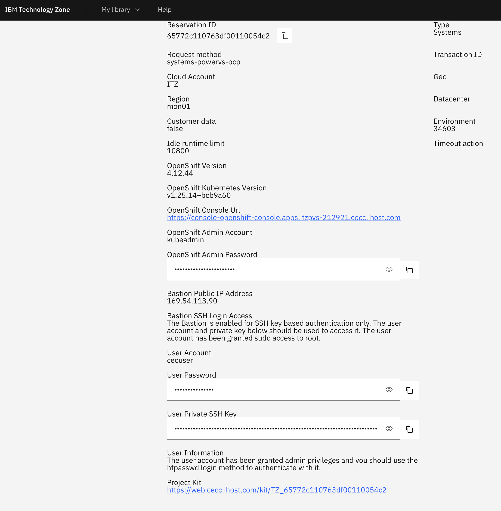
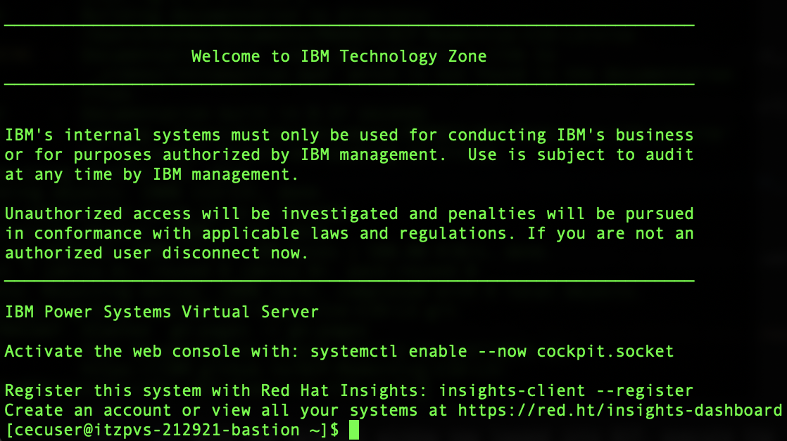
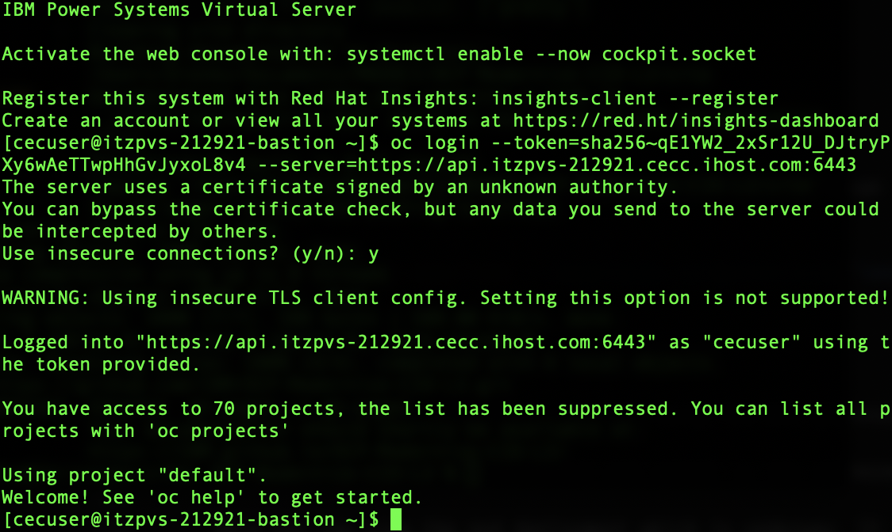
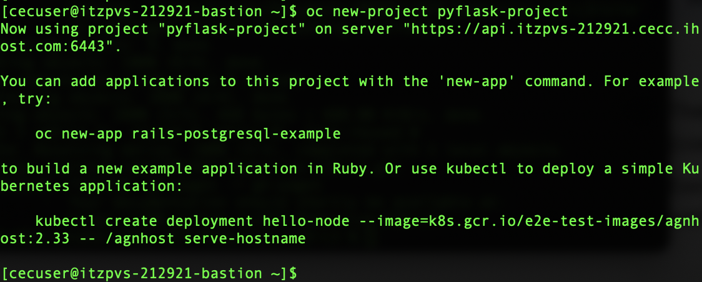

Module C: Programmatically create, scale, upgrade, and rollback an OpenShift application
COMMAND LINE ACCESS
In the module ahead, you will be required to establish connections over SSH to remote infrastructure endpoints. It is recommended that users do so via Terminal (Mac) or PuTTY (Windows). For detailed instructions on how to connect with PuTTY, or if you are using a Windows machine, reference the linked material.
The following steps will replicate the work done previously in Module B, but this time using a programmatic (command-line) driven approach, rather than Openshift's web-based graphical user interface.
The first step will be the creation of an application within OpenShift Container Platform (OCP) from an existing image hosted on the Red Hat Quay.io repository. In this module, you will be performing these operations programmatically using remote connections over SSH (via Terminal or Putty). The numbering of these instructions continues from Module B.
- If you are not logged into the Red Hat OpenShift cluster already, do so now. You will need to access parts of the OpenShift dashboard briefly before you can get to work over an SSH connection.
- Set the perspective viewer to Administrator from the drop-down in the top-left corner.
-
In the top-right corner of the dashboard, click the cecuser button (the account name you are currently logged in under) to open a drop-down menu.
- Click the Copy login command option from the menu. You will be asked to login using
htpasswda second time. - Your browser will open a new window which is mostly white, except for a Display Token link in the top-left — click this link to generate a login string.

- Click the Copy login command option from the menu. You will be asked to login using
-
OpenShift will generate a limited-time API token for logging in to the OCP cluster remotely.
Copy the complete value under the Log in with this token string (
oc login ==token...) and save it to a notepad, as you will be making use of this API token shortly.
-
Return to the My Reservations tab of IBM Technology Zone and drill down into your OpenShift reservation for additional Environment details.
- Locate the User Private SSH Key variable and copy it to clipboard using the shortcut.
- Save the complete key value (including the
BEGINandENDlines) to a new notepad file namedprivatekey.pemon local Desktop so that it can be quickly referenced later.

- Open a Terminal console (or PuTTY) on your local machine and navigate to Desktop (or the directory you saved the
.pemfile to) with the following command:
- Execute the following instruction to set the appropriate access privileges on the
.pemfile:
- Now add the private key to the keychain of your local machine. If you are running on a Mac, this instruction can be invoked using the following:
- Return to the ITZ My Reservations summary for the OCP environment once again for Environment details. Locate ahd copy the value of the Bastion Public IP Address to your clipboard. It should be something similar to:
Retain this value for your records as you will need it again later.
- With your Terminal window still open and in the same directory as your private key file (
~/Desktop), execute the following after substituting in the address from Step 48:
When logging in, you may receive a prompt asking whether to “Use insecure connections?” — respond with y and hit the Return key to continue.

-
You are now connected to the PowerVS bastion host. Next, you need to login to the OCP cluster running on this infrastructure.
To do so, make use of the API login token generated earlier in Step 43. Paste that string into the Terminal window and execute.
LOGIN FAILED
Remember to use your own unique API login token. It should look similar to oc login --token=sha256~qE1YW2_2xSr12U_DJtryPXy6wAeTTwpHhGvJyxoL8v4 --server=https://api.itzpvs-212921.cecc.ihost.com:6443.
If the login fails, try replacing api.cecc-251990.cecc.ihost.com with localhost instead, and try again.
You might be prompted once again to "Use insecure connection (y/n)?" — respond with y. After authenticating, the Terminal will now be remotely logged into the OpenShift on PowerVS cluster and ready for deploying applications into containers.

- With the Terminal window now logged into OCP, execute the following to create a new Project (in effect the same thing you did in Module B through the web graphical interface):

- Create a new deployment resource using the Quay.io image in the
pyFlaskproject defined just a moment ago:
CHECK DEPLOYMENT PROGRESS GRAPHICALLY
You can inspect the OpenShift cluster using the Web graphical user interface to verify that the application deployment is underway.
Return to the OpenShift dashboard and switch to the Administrator perspective. Then click Topology.
Here you can view the pod deployment which is underway. It will take several moments for the pod to be initialized and brought to a Running state.
Click the center of the deployment (the round icon on the Topology page) to check the changing status of the pod. Make sure that your pyflask-project is selected under Project (top-left corner), otherwise the Topology space may appear as empty.
-
The deployment instruction you just issued to the cluster will generate a corresponding pod (containerized application) that will be deployed to into a Running (live) state.
Execute the following instruction within Terminal to list all of the running pods available within your namespace:
- Next, you need to expose the deployment’s
8080port so that a route to the application can be created:
- Execute the following command to view the service:
RECORD THIS VALUE
Record the value under the EXTERNAL-IP field for your records.
-
In order to make the exposed service accessible externally (to the public), you must define a public router. To do so, return to the OpenShift cluster web dashboard and switch to the Administrator perspective.
- From the menus on the left side, drill down into Networking > Routes and then Create Route (blue icon in the top-right corner).
- Click the Project: drop-down menu at the top of the page and ensure that the value is set to
pyflask-projectbefore continuing with defining the new Route; otherwise, the Service created in Step 52 will not display in the configuration tool on Step 57.
-
Define a new Route with the following parameters:
- Name:
mypyflask - Service: select the
mypyflaskservice from Step 52 - Target Port:
8080->8080 (TCP) - Secure Route:
enabled - TLS Termination:
Edge - Insecure Traffic:
None
- Name:
- When satisfied, click Create.
-
Once the route has been defined and created, your browser will redirect to the Route Details panel. Here you will find additional configuration and health check details about the status of your route.
Click the URL below the Location section to view a live deployment of the
mypyflaskapp.
RECORD THIS VALUE
Record the output printed to screen from the live mypyflask application.
Now that you have successfully deployed the application using an existing Quay.io image, try scaling and rolling back the application. The creation of multiple replicas of a pod will help Amy and her team to ensure that their application’s deployment always has the available capacity (and resources) to meet the need of any increased demand for the application within the company.
- Returning to the Terminal console, execute the following command to increase the capacity of the pod from a single (
1) instance up to5instances:
- Check the status of the deployment:
- Verify that there are now
5pod instances running:
Amy’s team will next want to perform a rolling update to the application, thereby deploying it to a new container image. The “rolling” update capabilities of OpenShift make it possible for her team to update the running image and perform an “undo” operation if a problem is later discovered (during or after the update has been performed).
Showcase this by updating the application from v1 to v2 with the following steps.
- Update the application by executing:
- Check the status of the rollout:
- Retrieve a list of newly-launched pods with the
v2image:
- Further inspect the details of any of the five pods retrieved in Step 65 and use the following command to confirm that the pod is using the
v2application image:
Replace <pod-name> with the value in Step 65. Do not include the < > braces when executing the modified instruction.
RECORD THIS VALUE
Record the value to the right of Image under the Containers section.
Notice that the service and router objects remain unchanged, despite having updated the underlying Quay.io image version of the running pod.
-
Return to the Route Details panel (Step 59) and once again click the URL under the Location category. This will launch a new browser window where the
v2update ofmypyflaskwill be live and accessible.Take note of the updated message printed to screen.
When performing an application rollback, Amy’s team is able to inspect references to both old replicas and new ones. In the case of the mypyflask application, you should expect to see old replicas of the original 5 pods deployed earlier when you scaled the application.
The new replicas will be generated as a result of deploying 5 newly-created pods with the new application (v2) image. OpenShift uses a resource called a ReplicaSet to manage these two sets (old replicas and new replicas).
- To see the
mypyflaskapplication ReplicaSets, execute the following instruction within the Terminal console:
The number of DESIRED, CURRENT, and READY ReplicaSets for the application should each display 5.
- Undo the results of the previous (
v2) update by using a rollout instruction set:
- Use the
statuscommand to check the details of the deployment now that the earlier changes have rolled back:
- Get a list of the newly-created pods:
If you perform this step quickly after executing the instruction on Step 69, you'll likely see a mixture of Running and Terminating pods. After a few moments, the Terminating pods will be destroyed and only the Running (rolled back) pods will remain.
- As you did previously in Step 66, use the
describecommand (and the name of one of the pods from Step 71) to verify that theversionof the application has rolled back tov1:
Replace <pod-name> with the name of the pod recorded in Step 71. Do not include the < > braces when executing the modified instruction.
- Repeat your inspection of the ReplicaSets that was first performed in Step 68:
Notice that there’s still two sets of ReplicaSets: the old replicas and the new replicas. And as before, the number of DESIRED, CURRENT, and READY sets are equal to 5.
However, the ACTIVE sets (where the value is 5) have now been assigned to the list old replica sets — as opposed to previously in Step 68, where they belonged to the new replica sets. This confirms that the old ReplicaSet list is now active and managing 5 different pod replicas.
- Return to the Route Details panel on the OpenShift web dashboard (Step 59) and click the URL under the Location category. This will launch a new browser window, which should display the
v1version ofmypyflaskonce again. This confirms that the rollback operation was a success.
Well done! You’ve succeeded in managing Amy's app programmatically via Red Hat OpenShift on Power. That concludes the hands-on components to this Level 3 course.
You are encouraged at this stage to complete your Level 3 accreditation (requirements vary depending on your job role).